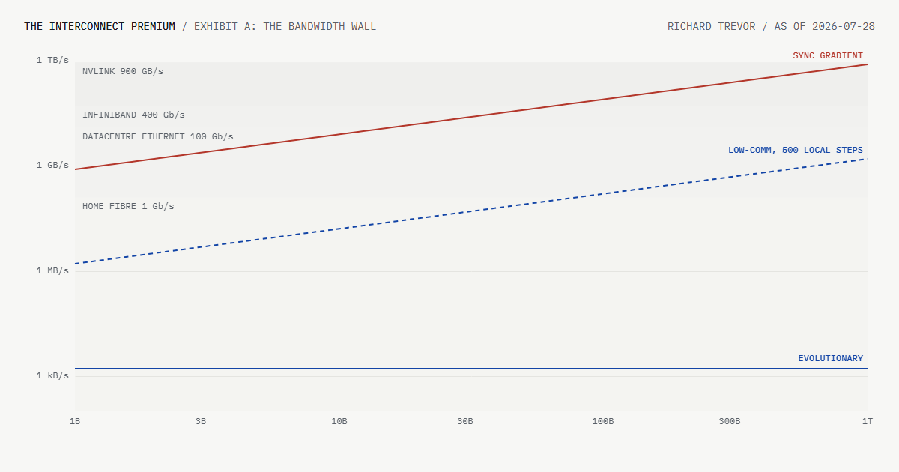

Abstract
A large share of AI hardware value is priced on the assumption that frontier training must happen inside one building. This write-up puts a number on that assumption and tracks it. In the unsharded data-parallel case the requirement is 0.8 bytes per second per parameter, which exceeds a 400 Gb/s port at 62.5B parameters at a 5 second step. Methods that need far less bandwidth already exist at published exchange rates: low-communication training cuts the requirement 400 to 500 times for a few points of efficiency; evolutionary methods cut it to bytes and pay 3 to 10 times in samples. The multi-site record over commodity links moved from 1.1B to 32B parameters in under a year, against a single-campus dense frontier of 540B. If that trajectory continues, training stops depending on the single large building and the demand mix across fabric, optics, memory and merchant silicon shifts with it. A daily marketplace collector tracks a bundle-price proxy for the premium, and three pre-registered criteria state in advance what would falsify the base case that the premium holds.
The Bandwidth Arithmetic
In the pure data-parallel case modelled here, every worker holds a full replica, computes gradients on its shard of the batch, and the fleet averages those gradients before the next step. The averaging is an all-reduce, and a bandwidth-optimal ring all-reduce moves close to twice the size of the exchanged buffer through each worker, every step.1 1. Ring all-reduce moves 2(N-1)/N of the buffer per worker (Patarasuk and Yuan, 2009). The factor is taken as 2 throughout; source 14.
Worked once, at 70B parameters. Gradients in bf16 are 2 bytes per parameter: a 140 GB buffer. The ring moves twice that through each worker: 280 GB per step. Frontier runs step every few seconds; the stated target here is 5 seconds.2 2. Derived from the Llama 3.1 405B disclosure: 6 FLOPs per parameter-token, a 16M token batch and 16,384 H100s at 400 TFLOPS each imply a 5.9 second step; source 9. That demands 56 GB/s of sustained interconnect per worker, which is more than a 400 Gb/s InfiniBand port can deliver at line rate. Modelled this way, a 70B run has already outgrown building-scale networking and requires a scale-up link. The general form is required bandwidth = 0.8 bytes per second per parameter, and the illustrative crossings follow: consumer fibre by 160M parameters, campus ethernet by 15.6B, a 400 Gb/s port by 62.5B, and an NVLink-class link by 1.1T.3 3. A worker in Exhibit A is one data-parallel rank holding a full replica. Payload efficiency and protocol overhead are omitted. Sharding and overlap change per-device traffic; see the comparison below and source 9.
The bound is not a per-NIC estimate for a sharded frontier run. Meta's disclosed Llama 3 405B layout used tensor parallelism of 8 and pipeline parallelism of 16. Dividing the same gradient payload across those 128 GPUs gives approximately 2.1 GB/s of gradient-sync traffic per GPU at the disclosed 5.9 second step, before tensor-, pipeline- and context-parallel traffic or protocol overhead. Frontier runs fit inside buildings in part by buying this additional parallelism and fabric.
This is one physical basis of scale-up fabric, co-packaged optics and rack-scale system value. HBM addresses a separate local-memory bottleneck, though it is sold inside many of the same systems. The unsharded bound takes three constants and a division to compute; the sharded case distributes that traffic but introduces other communication. Either way the assumption is stated in numbers, and the sections below test it.

The Method Spectrum
Three families of methods sit at three points on the communication-cost curve, each with a stated exchange rate.
Synchronous gradient training is the efficiency baseline: best use of every sample, full exchange every step, communication scaling with model size. Everything above the 100 Gb/s band in the exhibit exists to serve it.
Low-communication gradient methods run hundreds of optimiser steps locally and synchronise compressed pseudo-gradients at long intervals. DiLoCo demonstrated 500 local steps at a modest quality cost; the INTELLECT runs carried the recipe to real distance, training 10B parameters across three continents with roughly 400 times less communication than synchronous data parallelism.4 4. DiLoCo, source 1; Streaming DiLoCo adds overlap and 4-bit quantisation, source 2; INTELLECT-1 technical report, source 4. The exchange rate is explicit: orders of magnitude less bandwidth, a few points of efficiency, more total compute for equal loss. Fabric pricing power rests on that exchange rate: every order of magnitude conceded moves training capacity from inside the building to outside it.
Evolutionary and population-based methods hold the far end of the curve. Workers perturb parameters under shared random seeds, evaluate, and exchange scalar fitness values: a few bytes per worker per generation, independent of model size. The published price is sample inefficiency: 3 to 10 times the data of a gradient baseline, measured on reinforcement-learning tasks rather than language pretraining.5 5. Salimans et al., 2017, source 6: evolution strategies scaled to over a thousand workers with bytes-per-generation communication.
The deployment profile follows from the arithmetic: heterogeneous machines, no shared fabric, workers exchanging a few bytes of fitness per generation, and compute rather than communication as the binding constraint. The sample penalty, not the network, is why these methods lose at frontier scale on current evidence. The consequence for the demand mix is specific: if the sample gap closes, compute demand rises while co-location demand falls, the one state where accelerators and fabric decouple.
The three families sit on one curve, and the gradient world has spent two years descending it, cutting its bandwidth requirement by two and a half orders of magnitude for a few points of efficiency. The premium prices the assumption that the descent stops here; the distance record below measures whether it does.
What The Market Says
Rental marketplaces put a public price on the same accelerator in different machines. The spread between whole NVLink nodes and standalone cards is a daily proxy for what the fabric is worth, and only a proxy: machine, host, region and bundle composition move the same number.
Methodology v2 uses Vast.ai public H100 SXM 80GB listings and verified rentable asks; whole 8+ GPU NVLink nodes on one side and single-GPU asks on the other; one observation per unique machine, formed as the within-machine median ask per GPU-hour; then the median per side after trimming observations outside 0.5x to 2.0x of the side median. A day is valid only with at least five machines per side. Daily aggregate provenance is stored; individual listings are never republished.
The stored pull at 19:46 UTC on 25 July 2026 is the reason the Monitor does not yet chart the series: eleven retained standalone asks but only three verified whole-node asks.6 6. Stored v1 pull, 2026-07-25T19:46:13Z: standalone median $2.88 per GPU-hour, n=11; whole 8+ GPU NVLink nodes median $3.09, n=3. The clustered side is below the stated minimum. Stored in data/premium.json; v2 begins with subsequent pulls. The series is collecting rather than publishing: the book is not yet deep enough to clear the stated minimum, and days below it are stored as invalid rather than plotted.
The Distance Record
The record that bears on the thesis is the largest model trained across sites over links anyone can buy. OpenDiLoCo took 1.1B parameters across two continents in July 2024. INTELLECT-1 took 10B across three continents that November, on links the arithmetic above says need only about 128 Mb/s per worker. INTELLECT-2 ran 32B in 2025, though as reinforcement-learning post-training, which exchanges far less than pretraining and is labelled accordingly.7 7. Sources 3, 4, 5. RL post-training moves weights and rollouts occasionally, not gradients every step; the 32B point is a weaker claim than the 10B one.
Frontier laboratories also train across datacentres: Gemini was trained across multiple sites on private fibre. Owned, provisioned, exclusive links extend the radius of one building without changing its cost of entry, so they carry no evidence about commodity links. The exhibit separates the two records by marker for that reason.
The gap is the number to track. In mid 2024 the commodity-link record stood roughly 500 times below the largest documented single-campus dense run, PaLM at 540B. By 2025 the gap was about 17 times. Two data points set a direction; criterion 2 states the crossing that would settle it. Each crossing on the way converts standalone fleets from stranded capacity into competing supply, and useful-life assumptions register it first.
Demand Mix
If the premium holds, value keeps accruing where the bandwidth requirement is met: scale-up fabric, optics and networking attach, HBM intensity, and integrated rack-scale systems rather than merchant parts. NVIDIA reported 142 percent growth in Data Center networking revenue in fiscal 2026, driven by NVLink fabric, Ethernet and InfiniBand; Broadcom attributes its AI semiconductor demand to custom accelerators and Ethernet switching; Micron reported higher HBM demand from AI data centres.8 8. Sources 15 to 17. These disclosures establish demand for the components; they do not measure a standalone interconnect premium. Under Exhibit A's assumptions, capacity behind weaker links cannot hold the 5 second step, and that constraint is what the premium prices.
If the premium compresses, the first effects are accounting effects. Standalone and prior-generation fleets re-enter the training pool and earn longer, which moves useful-life and depreciation assumptions inside hyperscaler accounts before it moves any headline.9 9. Useful-life estimates have moved both ways. Microsoft extended server and network equipment from four to six years in 2022. Amazon extended servers from five to six years in 2024, then shortened a subset to five years and accelerated retirements effective in 2025, citing the pace of AI and machine-learning development. Sources 18 and 19. Networking attach compresses, compute becomes fungible across sites, and the bundle premium of integrated racks shifts back toward merchant silicon. The Monitor's scenario table carries the same rows as directions only; nothing here recommends buying or selling anything.
States and Triggers
Four states cover the outcomes. Each has an observable trigger, and the triggers arrive in a known order.
| State | Trigger to watch | What re-rates first |
|---|---|---|
| The descent stalls (base case) | The distance record stops closing and the premium series publishes and holds. | Nothing; fabric, attach and short depreciation schedules stay as priced. |
| Low-comm reaches the frontier | Criterion 2: a documented 100B+ run over 10 Gb/s links within 1.3x matched compute. The early warning is criterion 3, published communication factors of 5,000x at 10B+. | Useful lives and depreciation inside hyperscaler accounts, then networking attach, then the system-versus-merchant mix. |
| Evolutionary methods close the sample gap | Published parity within 2x samples of a gradient baseline at 10B+ scale, against the 3 to 10x published today. | Fabric compresses hardest while total compute demand rises; merchant and distributed capacity accrue. |
| The rental spread compresses | Criterion 1: the rental spread under 5 points for two consecutive quarters. | Confirmation rather than warning; by this point the re-rating is under way. |
Communication-reduction factors appear in papers quarters before a frontier-scale run is demonstrated; accounting changes follow within a reporting cycle or two; attach rates and the rental spread move last, because marketplaces price bundles and filings lag decisions. The leading indicators are public: the arXiv record and the useful-life notes in annual filings. The rental spread is a confirming indicator rather than a leading one.
Caveats
The rental spread reflects marketplace composition: who lists, what commitments they carry, and regional mix, not purely interconnect value. It is a proxy tracked consistently under a published filter, not a clean price.
The bandwidth exhibit assumes stated precisions, step times and synchronisation schemes. Different choices shift the lines by constant factors; they do not change the ordering of the three families or the existence of the wall.
Evolutionary methods' sample inefficiency is well documented. No claim is made that they displace gradient training at frontier scale on current evidence; they define the floor of the communication-cost curve, not the frontier of efficiency.
Frontier multi-datacentre training on private fibre is not evidence for commodity-link training. The distance exhibit separates the two by marker, and only the commodity record feeds the kill criteria.
What Would Kill This
1. The premium series compresses below 5 percentage points and stays there for two consecutive quarters, absent a supply-side explanation such as a cluster capacity glut.
2. A documented run of at least 100B parameters completes over links of 10 Gb/s or less within 1.3 times the compute of a matched co-located baseline. Both numbers fixed here, before the fact.
3. Published, well-documented communication-reduction factors reach 5,000 times synchronous data parallelism at 10B parameters or larger: one order of magnitude beyond today's 400 to 500 times.
Any trigger produces a written update to this page. The Monitor watches all three daily.
Sources
- 1Douillard et al., DiLoCo: Distributed Low-Communication Training of Language Models, arXiv 2311.08105, 2023.
- 2Douillard et al., Streaming DiLoCo with overlapping communication, arXiv 2501.18512, 2025.
- 3Jaghouar et al., OpenDiLoCo: An Open-Source Framework for Globally Distributed Low-Communication Training, arXiv 2407.07852, 2024.
- 4Prime Intellect, INTELLECT-1 Technical Report, arXiv 2412.01152, 2024.
- 5Prime Intellect, INTELLECT-2 Technical Report, arXiv 2505.07291, 2025.
- 6Salimans et al., Evolution Strategies as a Scalable Alternative to Reinforcement Learning, arXiv 1703.03864, 2017.
- 7Brown et al., Language Models are Few-Shot Learners, arXiv 2005.14165, 2020.
- 8Chowdhery et al., PaLM: Scaling Language Modeling with Pathways, arXiv 2204.02311, 2022.
- 9Meta, The Llama 3 Herd of Models, arXiv 2407.21783, 2024.
- 10Google, Gemini: A Family of Highly Capable Multimodal Models, arXiv 2312.11805, 2023.
- 11NVIDIA, H100 Tensor Core GPU specifications: NVLink 900 GB/s, nvidia.com.
- 12NVIDIA, Quantum-2 NDR 400 Gb/s InfiniBand platform, nvidia.com.
- 13Vast.ai public marketplace search API, console.vast.ai; collector in scripts/pull_premium.py.
- 14Patarasuk and Yuan, Bandwidth optimal all-reduce algorithms for clusters of workstations, JPDC, 2009.
- 15NVIDIA, fiscal 2026 Annual Report: Data Center networking revenue and NVLink, Ethernet and InfiniBand drivers, SEC filing 0001045810-26-000021.
- 16Broadcom, fiscal 2025 Form 10-K: custom accelerators, HBM integration and Ethernet switching for AI data centres, SEC filing 0001730168-25-000121.
- 17Micron, fiscal 2025 Form 10-K: AI data-centre demand for HBM, SEC filing 0000723125-25-000028.
- 18Microsoft, fiscal 2024 Form 10-K: 2022 extension of server and network equipment useful lives from four to six years, SEC filing 0000950170-24-087843.
- 19Amazon, fiscal 2024 Form 10-K: server useful-life changes and accelerated depreciation tied to AI and machine-learning development, SEC filing 0001018724-25-000004.